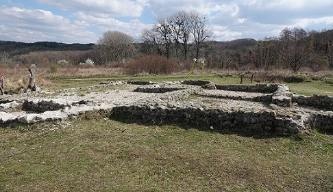
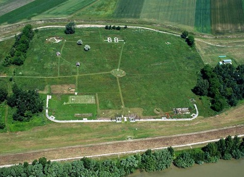

|
ESLOVAQUIA
La mayor
parte del territorio de la actual Eslovaquia se encontraba fuera de los
límites del Imperio. Poblada por los Celtas desde el siglo IV a.e.c.
quienes construyeron oppida en Bratislava y Liptov. A partir del
año 6, el imperio romano estableció y mantuvo varios asentamientos sobre
el Danubio. En la zona occidental y central de Eslovaquia entre los años
20 y 50 existió el reino bárbaro de Vannius, fundado por el pueblo
germánico de los cuados. La actual Eslovaquia fue habitada entre los
siglos I y IV, por los pueblos de los quadis, sarmatas y marcomanos. - En
Bratislava,
en el barrio al sur de la ciudad, Rusovce, podemos ver el fuerte romano de Gerulata
y su Museo con los restos de época romana, pertenecientes tanto al
campamento militar como al vicus civil desarrollado al abrigo del
primero. También se hallaron varias necrópolis, alrededor del área del
castellum y del vicus. La investigación arqueológica en Rusovce reveló
al menos cuatro etapas de construcción datadas del siglo I al IV.
Ver video:
Museo y fuerte romano de Gerulata - A 12km de Bratislava hallamos restos de la fortaleza romana de Dowina en el castillo Devin, que formaba una parte del sistema defensivo del Limes Romanus. - La villa romana de Dubravka donde se han hallado unas termas romanas. Foto: Tomas Sokol

- La ciudad de Dudince destacamos las aguas termales volcánicas en la roca de travertina donde se bañaban los soldados de las legiones romanas. Unas 32 piscinas llamadas Baños Romanos fueron declaradas el Monumento Cultural Nacional de Eslovaquia.
- El fuerte
romano de Kelemantia en
Iza. Del antiguo fuerte se conservan vestigios del lienzo amurallado
próximo a la entrada Norte y una sección de la zona Sur. Los objetos
encontrados en las excavaciones arqueológicas de Kelemantia se
encuentran expuestos en el Podunajské Museum de
Nitra.

|